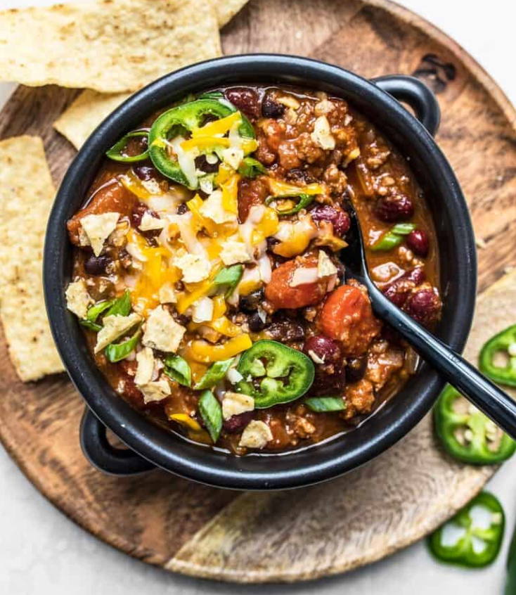

Chili

Description
The king of cheap and low effort, yet so healthy and delicious - Chili.
If you got ~$20 and a handy crockpot, look no further than this classic dish that will make you so full and warm.
Chili might as well be the pizza or salad of soups with how versatile and customizable it is.
This is just one way to prepare this awesome dish!
Ingredients
This recipe needs at least a 4 quart crockpot!
- 1 yellow onion. (medium to large)
- 2 cloves garlic
- 1 lb. protein of choice. (Ground Beef, Ground Turkey, Shredded Chicken, etc.)
- 2 15oz. choice of canned beans. (Black, Kidney, Pinto, etc.)
- 1 15oz. can of corn
- 1 15oz. can diced tomatoes with juices
- 1 6oz. can tomato paste
- 1 cup of water or broth of choice. (You can even mix 1/2 water 1/2 broth, etc.)
- chili powder, cumin, salt, pepper, garlic powder, onion powder, and cayenne powder for desired amounts of seasoning
Steps
- Brown / cook the protein first if desired.
- Sautee onions next if desired in same pan to grab the leftover flavor from the protein.
- Otherwise, whether you did the first 2 steps or not, throw everything into the crockpot and I would advise to cook on low for several hours until desired consistency, temperature, and flavor.
- Serve and enjoy!
Back to Recipes